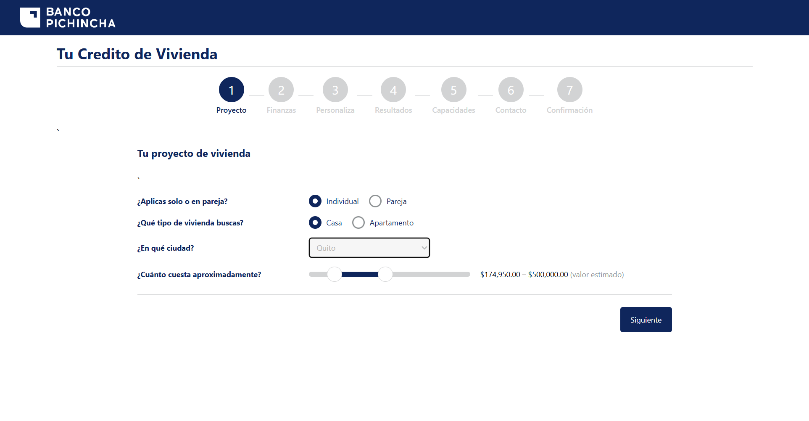
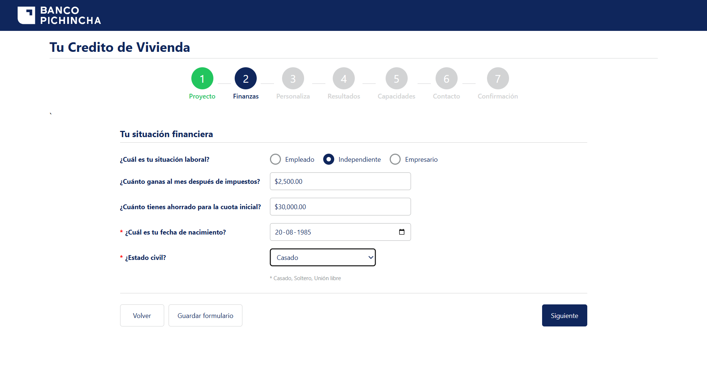
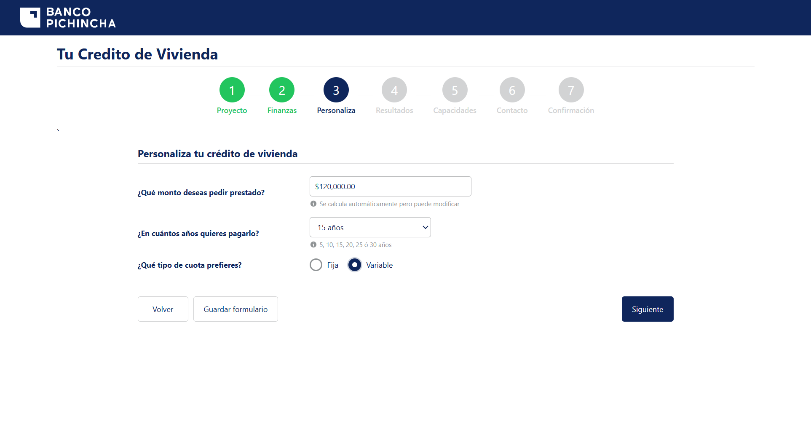
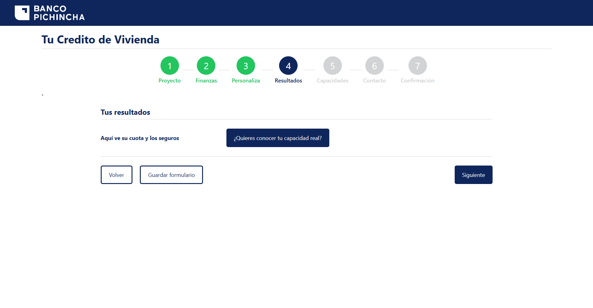
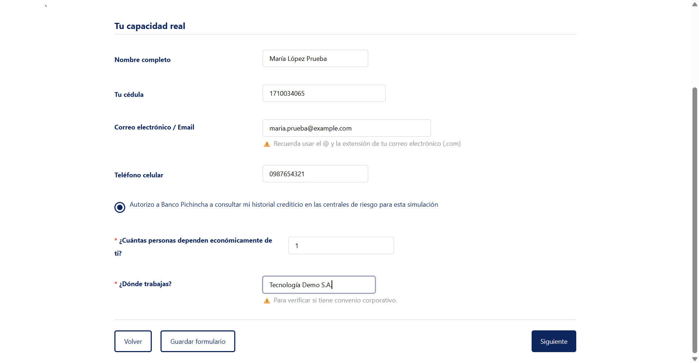
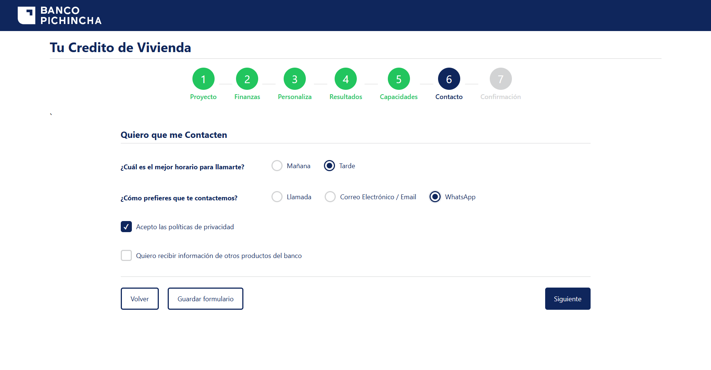
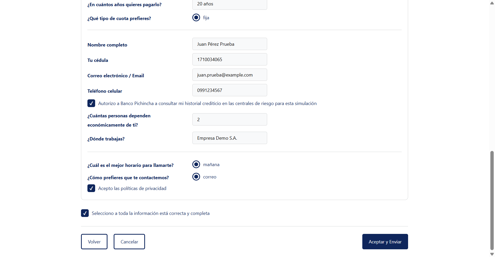
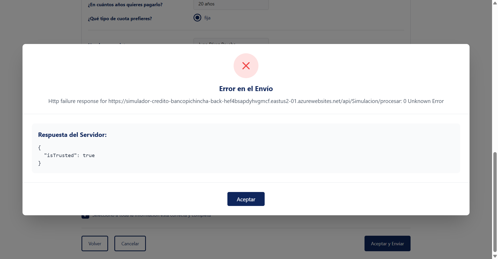

Simulador de Crédito Hipotecario «Tu Crédito de Vivienda» · Flujo básico por sección
Fecha de ejecución30-10-2026 10:25 – 10:28
HerramientaKatalon Studio 11.7.0
NavegadorChrome 156.0.8078.74 · Windows
SuiteTS_SimuladorHipotecario
1. Resumen ejecutivo
7
Casos ejecutados
5
Exitosos
2
Fallidos
71,4%
Tasa de éxito
3m 28s
Duración total
Veredicto: NO APTO para salida a producción.
La navegación por las 7 secciones del asistente funciona y los formularios validan los campos obligatorios, pero el
simulador no cumple su objetivo de negocio: (1) no presenta al cliente la cuota mensual ni el costo de seguros y
(2) la simulación no puede enviarse porque el servicio backend está deshabilitado (HTTP 403 «Site Disabled»).
Ningún cliente podría completar una solicitud en el estado actual.
Tipo de prueba: funcional automatizada E2E (UI), flujo básico (camino feliz) de cada sección.
Cobertura: 7 de 7 secciones: Proyecto, Finanzas, Personaliza, Resultados, Capacidades, Contacto y Confirmación.
Validaciones por sección: sección activa en el indicador de pasos, título, botón «Siguiente» bloqueado sin datos obligatorios,
habilitado al completarlos y avance a la sección siguiente. Adicionalmente: cálculo visible en Resultados, resumen fiel en Confirmación y envío exitoso.
Fuera de alcance: pruebas negativas exhaustivas, rendimiento, seguridad, accesibilidad y compatibilidad multinavegador.
3. Resultado por sección
#
Caso de prueba
Sección
Validaciones clave
Duración
Estado
1
TC01_Proyecto
Proyecto
Obligatorios (solicitante, vivienda, ciudad) bloquean «Siguiente»; avance a Finanzas.
20,9 s
PASÓ
2
TC02_Finanzas
Finanzas
Situación laboral, ingresos y ahorro con formato moneda, fecha de nacimiento y estado civil; avance a Personaliza.
18,5 s
PASÓ
3
TC03_Personaliza
Personaliza
Monto, plazo (15 años) y cuota variable; avance a Resultados.
24,1 s
PASÓ
4
TC04_Resultados
Resultados
Debe mostrar cuota mensual y costo de seguros; avance a Capacidades.
32,5 s
FALLÓ
5
TC05_Capacidades
Capacidades
Datos personales, autorización de consulta a centrales de riesgo; avance a Contacto.
36,6 s
PASÓ
6
TC06_Contacto
Contacto
Horario, medio de contacto (WhatsApp) y política de privacidad; avance a Confirmación.
32,3 s
PASÓ
7
TC07_Confirmacion
Confirmación
Código de simulación y resumen con los datos ingresados (OK); confirmación obligatoria (OK); envío al servicio (FALLA).
42,8 s
FALLÓ
4. Defectos identificados
DEF-01 · El envío de la simulación falla: servicio backend deshabilitado Severidad ALTA · Bloqueante
Caso
TC07_Confirmacion
Resultado obtenido
Al pulsar «Aceptar y Enviar» aparece el modal «Error en el Envío»: Http failure response for https://simulador-credito-bancopichincha-back-hef4bsapdyhvgmcf.eastus2-01.azurewebsites.net/api/Simulacion/procesar: 0 Unknown Error.
Resultado esperado
La simulación se registra y se confirma al cliente que será contactado.
Causa raíz
El navegador reporta bloqueo CORS (sin cabecera Access-Control-Allow-Origin). Una verificación directa del endpoint devuelve HTTP 403 «Site Disabled»: la App Service de Azure del backend está detenida o deshabilitada (p. ej., cuota agotada), por lo que no responde con cabeceras CORS.
Efecto adicional
Al cerrar el modal el asistente vuelve a la sección 1 y se pierden los datos diligenciados.
Acción sugerida
Reactivar la App Service del backend, confirmar la configuración CORS para el origen del frontend y repetir TC07.
DEF-02 · La sección Resultados no muestra cuota ni seguros Severidad ALTA
Caso
TC04_Resultados
Resultado obtenido
Solo se muestra el texto «Aquí ve su cuota y los seguros», sin ningún valor. En la consola del navegador los resultados se registran en cero: {monthlyPayment: 0, totalAmount: 0, totalInterest: 0, loanToValue: 0, insuranceCost: 0}.
Resultado esperado
Cuota mensual, costo de seguros y totales calculados con el monto ($150.000), plazo (20 años) y tipo de cuota seleccionados.
Impacto
El cliente no obtiene el resultado principal del simulador.
Acción sugerida
Revisar la lógica de cálculo de la sección Resultados (o su dependencia del backend) y el enlace de datos a la vista.
5. Observaciones (no bloquean la ejecución)
#
Observación
Sección
Prioridad
OBS-01
En Capacidades el botón «Siguiente» está habilitado con todos los campos vacíos (nombre, cédula, correo, teléfono), a diferencia de las secciones 1 a 3. Se recomienda verificar la obligatoriedad y el formato de cédula y correo.
Capacidades
Media
OBS-02
El teléfono celular muestra el formato de Colombia +57 (000) 000 00 00 en un producto de Ecuador (+593).
Capacidades
Media
OBS-03
El rango de precio muestra «$174,950.00» aunque el control deslizante tiene el valor $170.000.
Proyecto / Confirmación
Media
OBS-04
Aparece un carácter suelto «`» bajo el indicador de pasos en todas las secciones.
Todas
Baja
OBS-05
Textos: «Tu Credito» sin tilde; en el resumen la pregunta cambia a «¿Edificas solo o en pareja?» (en la sección 1 es «¿Aplicas solo o en pareja?»); «Selecciono a toda la información está correcta» tiene redacción incorrecta.
Varias
Baja
6. Evidencias

TC01 · Proyecto diligenciado – PASÓ

TC02 · Finanzas diligenciada – PASÓ

TC03 · Personaliza diligenciada – PASÓ

TC04 · Resultados sin cuota ni seguros – FALLÓ (DEF-02)

TC05 · Capacidades diligenciada – PASÓ

TC06 · Contacto diligenciado – PASÓ

TC07 · Resumen y confirmación antes del envío

TC07 · Error en el envío – FALLÓ (DEF-01)
7. Recomendaciones y próximos pasos
Prioridad 1: reactivar el backend (simulador-credito-bancopichincha-back) y validar CORS; volver a ejecutar la suite completa.
Prioridad 2: corregir el cálculo y la presentación de la cuota y los seguros en Resultados.
Agregar validaciones de obligatoriedad y formato en Capacidades (cédula ecuatoriana, correo, celular +593).
Conservar los datos del asistente cuando falla el envío, para que el cliente pueda reintentar.
Ampliar la automatización con escenarios negativos y data-driven (pareja/apartamento, otras ciudades y plazos, empleado/independiente/empresario).